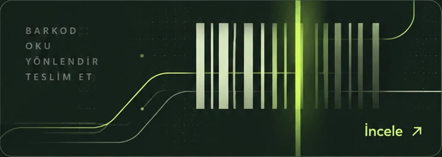

OTO ANALİZ MOTORU
Smart Code Check
HTML ve CSS kodunuzdaki bazı yapısal sorunları ve hassas bilgi belirtilerini tarayıcınızda inceleyin.
Projenizi anlatınCreated by Murti
Projelerim
FİKİRDEN ÇÖZÜME, GERÇEK PROJELER.
01BarcodBagaj operasyonları için barkod ve yönlendirme.

Barcod, bagaj süreçlerinde barkod oluşturma ve operasyonel iş akışını desteklemek amacıyla geliştirdiğim bir yazılım projesidir.
02Murti TAGYolculuk ücreti ve sürücü yönetimi.
Murti TAG, telefonla alınan yolculukların ücretini hesaplamak ve sürücü kayıtlarını düzenlemek için geliştirdiğim bir uygulamadır. Sürücü uyarıları ve yönetim araçları aynı yapı içinde yer alır. Buradaki tanıtımda sürücülerin kişisel bilgilerine veya özel kayıt ekranlarına yer vermiyorum.
Projeyi aç ↗03Limon. WebGeliştirme aşamasında
Limon. Web, geliştirmeyi sürdürdüğüm web projesidir. Mevcut sayfaları bağlantı üzerinden inceleyebilirsiniz; içerik ve işlevler geliştirme sürecinde değişebilir. Projeyi henüz tamamlanmış bir ürün olarak sunmuyorum.
Projeyi aç ↗04Smart Code CheckHTML ve CSS için temel ön kontrol.
Smart Code Check, HTML ve CSS içeriğini çalıştırmadan bazı yapısal sorunları ve hassas bilgi belirtilerini arayan bir ön kontrol aracıdır. İşlemler tarayıcı içinde yapılır; araç, kesin hata tespiti veya kapsamlı bir güvenlik denetimi sağlamaz. Geliştirmeyi sürdürdüğüm bu sürümü kod merkezinde deneyebilirsiniz.
Projeyi aç ↗05Güzellik Salonu Reklam HesaplayıcıReklam bütçesi için başlangıç tahmini.
Güzellik işletmelerinin reklam bütçesi için bir başlangıç tahmini oluşturmasına yardımcı olan bir hesaplama aracıdır. Girilen bilgilere göre üretilen tahminler, bütçe seçeneklerini karşılaştırmak amacıyla kullanılabilir. Araç; müşteri sayısı, satış veya reklam getirisi garantisi vermez.
Projeyi aç ↗06Limon. GameGeliştirme aşamasında
Limon. Game, üzerinde çalıştığım oyun projesidir. Geliştirme aşamasında olduğu için burada oynanabilir bir sürüm veya indirme bağlantısı sunmuyorum. Paylaşılabilir bir sürüm hazır olduğunda bu alanda duyuracağım.
Çalışma alanım
01Özel yazılım
İş takibi, kayıt yönetimi ve günlük işlemler için ihtiyaca uygun uygulamalar geliştiriyorum. Mevcut iş akışınızı birlikte değerlendiriyor; hangi verilerin tutulacağını, kimlerin hangi ekranları kullanacağını ve beklenen çıktıları belirliyorum. Uygulanacak özellikleri işe başlamadan önce yazılı olarak netleştiriyorum.
02Web siteleri ve yönetim panelleri
İşletmenizi veya projenizi anlatan web siteleri ve içeriklerinizi yönetmenizi sağlayan paneller üzerinde çalışıyorum. Sayfa yapısını, gezinmeyi, form alanlarını ve mobil görünümü kullanım amacına göre planlıyorum. Gerekli yönetim özelliklerini, kullanılacak altyapıyı ve teslim kapsamını ön değerlendirmede birlikte belirliyorum.
03Otomasyon ve barkod sistemleri
Tekrarlanan kayıt, veri işleme ve barkod işlemlerini düzenleyen çözümler geliştiriyorum. Verinin sisteme nasıl gireceğini, hangi adımlardan geçeceğini ve nasıl bir çıktı üretileceğini iş akışınıza göre değerlendiriyorum. Cihaz bağlantısı veya mevcut bir sisteme uyarlama gerekiyorsa teknik koşulları ayrıca inceliyorum.
04BT çözümleri ve teknik destek
Bilgisayar, yazılım ve günlük BT kullanımında karşılaşılan sorunları inceliyor; uygulanabilir çözüm seçeneklerini açıklıyorum. Uzaktan değerlendirilebilen işlemlerle yerinde müdahale gerektiren durumları ayırıyorum. Destek kapsamını, erişim ihtiyacını ve işlemlerin sınırlarını başlamadan önce sizinle netleştiriyorum.
Çalışma sürecim
Genel çalışma akışı örneğidir; güncel bir projenin ilerlemesini göstermez.
İhtiyacın belirlenmesi
Önce mevcut durumu, çözmek istediğiniz sorunu ve beklediğiniz sonucu sizden dinliyorum. Kullanılacak cihazları, mevcut uygulamaları ve işin önceliklerini sizinle birlikte belirliyorum. Bu aşamada şifre veya özel müşteri kaydı paylaşmanız gerekmez; örnekler gerekiyorsa kişisel verilerden arındırılmış içerik kullanmanızı isterim.
Teknik ön değerlendirme
Talebin teknik olarak nasıl karşılanabileceğini, mevcut sistemle uyumunu ve olası sınırlamaları inceliyorum. Ek araç, cihaz bağlantısı veya dış hizmet gerekip gerekmediğini değerlendirip seçenekleri açıklıyorum. Yapılabilirlik ve kapsam netleşmeden kesin ücret ya da teslim tarihi vermiyorum.
Yazılı mutabakat
Yapılacak işleri, kapsam dışında kalan talepleri, ücreti ve öngörülen takvimi sizinle birlikte yazılı olarak netleştiriyorum. Revizyon sınırlarını, sizden beklenen bilgi ve erişimleri, teslim biçimini ve sorumlulukları da bu aşamada sizinle netleştiriyorum. Geliştirmeye, bu koşullar üzerinde karşılıklı olarak anlaştıktan sonra başlıyorum.
Geliştirme ve test
Üzerinde anlaştığımız özellikleri belirlenen iş planına göre geliştiriyorum. İşin kapsamına uygun işlevsellik ve güvenlik kontrollerini yapıyor, web arayüzlerini farklı ekran boyutlarında inceliyorum. Yaptığım kontrolleri ve sınayamadığım noktaları açıkça belirtiyor; kapsam değişikliği gerekirse önce sizinle görüşüyorum.
Teslim ve devir
Teslim öncesinde tamamlanan işleri, kullanım biçimini ve bilinen sınırlamaları sizinle birlikte gözden geçiriyorum. Anlaşmaya dâhil olan dosyaları, erişimleri ve kullanım bilgilerini kararlaştırılan biçimde devrediyorum. Teslim sonrasındaki destek veya ek geliştirme taleplerinin kapsamını ve koşullarını sizinle ayrıca netleştiriyorum.